Презентация по географии
Великое Герцогство
Люксембург
Little Switzerland · Lëtzebuerg · 2 586 км² сердца Европы
Экономико-географическое положение
- Площадь: 2 586 км² — одно из самых малых государств мира (171-е место): всего в 1,5 раза больше Москвы.
- Соседние страны: граничит с Бельгией (на западе и севере, ~148 км), Францией (на востоке, ~73 км) и Германией (на востоке, ~135 км).
- Выхода к морю нет — страна полностью окружена сушей; ближайший порт Антверпен в 150 км связан водным путём по реке Мозель и каналу.
- Положение исключительно выгодное: в самом центре «голубого банана» — главной оси расселения Западной Европы между Миланом, Парижем, Брюсселем и Лондоном.
- Входит в ЕС, НАТО, Шенгенскую зону; столица — один из центров институтов Евросоюза (Европейский суд, Евростат).
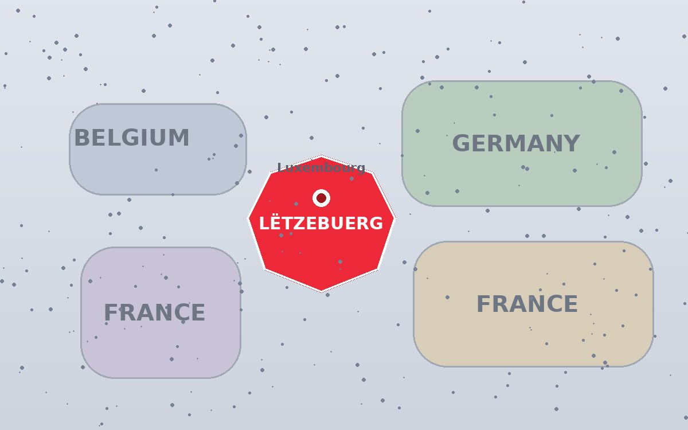
Природные условия
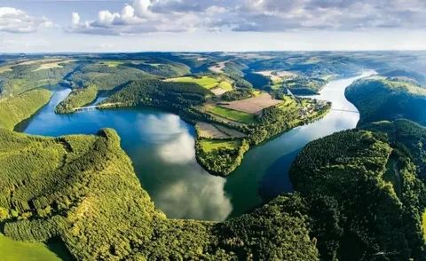
Рельеф
Две части: север — Эльтлинген (Арденнское плато, до 559 м, уступы и ущелья «Малой Швейцарии»), юг — Гутланд (волнистые равнины, до 422 м). На юго-западе — «Минёретт», район отработанных рудников.
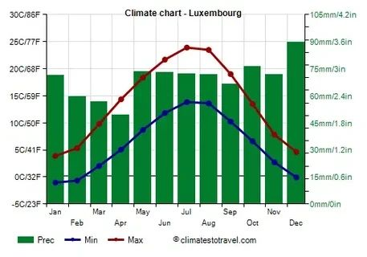
Климат
Переходный от морского к континентальному. Средняя температура января +1…+3°C, июля +17…+19°C. Осадков 700–850 мм в год, максимум летом. На севере холоднее и выше влажность.
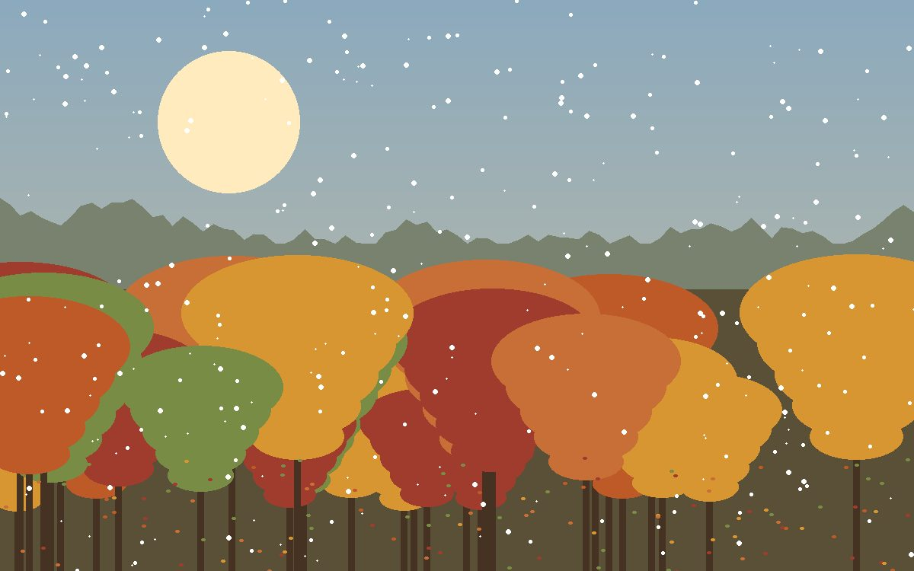
Почвы и растительность
Под лесами — бурые лесные и дерново-подзолистые почвы, на полях Гутланда — плодородные бурозёмы. Лесистость ~36%: дуб, бук, граб, ель, сосна. Луга и пастбища занимают около трети территории.
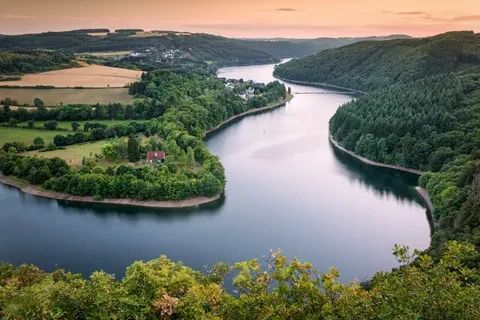
Внутренние воды
Реки бассейна Рейна: Мозель (судоходна, граница с Германией), Ур, Зэр, Альзетт. Много небольших озёр и прудов, уровень грунтовых вод высокий, распространены карстовые явления.
Животный мир
Фауна не богата: косуля, кабан, лисица, барсук, заяц; в лесах — глухарь и чёрный аист, в долинах Мозеля и Ура — выдра и редкие виды летучих мышей. Охрана — заповедники «Эльтлинген» и долина Ура.
Природные ресурсы

Практически отсутствуют. Каменный уголь бассейна Минёретт почти выработан, добыча прекращена в 1970-х. Нефть и газ — 100% импорт.
Главное богатство прошлого: minette — железные руды юго-запада. Обеспечили расцвет металлургии, к 1980-м месторождения исчерпаны, руда ввозится.
Промышленного значения не имеют: калийные соли за залеганием нерентабельны, сера отсутствует. Роль химического сырья играют привозные ресурсы.
~93 тыс. га леса (36% территории), запас древесины оценивается в десятки млн м³; ежегодный прирост превышает рубку — ресурсы расширяются.
Полностью обеспечивают потребности: сток рек Мозель и Ур, водоносные песчаники Триаса дают питьевую воду; гидроэнергетический потенциал используется на Мозеле.
Пахотные земли ~50%, благоприятный агроклимат юга; подземные галереи Казематы и ландшафты Малой Швейцарии — основа туризма.
Вывод: собственных минеральных ресурсов стране не хватает — экономика опирается на человеческий капитал, выгодное положение и импорт сырья.
Промышленность
- Вторичный сектор даёт лишь ~13% ВВП, но он высокотехнологичен: после кризиса металлургии сделана ставка на новые отрасли.
- Производят: стальной прокат (ArcelorMittal — крупнейшая сталелитейная компания мира штаб-квартирой в Люксембурге), автодетали и комплектующие (Goodyear — шины), продукцию химии и фармацевтики, стекло, пищевые продукты.
- Новые отрасли: космические технологии (спутниковый оператор SES, компания Space Resources), IT и финтех, производство батарей и «зелёного» водорода.
- Экспорт: сталь и металлы, химикаты и пластмассы, резиновые изделия, оборудование, продукты питания и напитки.
- Импорт: нефть и нефтепродукты, руды и металлолом, машины и оборудование, продовольствие, потребительские товары.
- Электроэнергетика: ТЭС на природном газе и угле (Rumelange, Esch-sur-Alzette), ГЭС на реках Мозель, Ур и Савр (~10 станций), ветропарки и солнечные электростанции; ~85% электроэнергии импортируется из соседних стран.
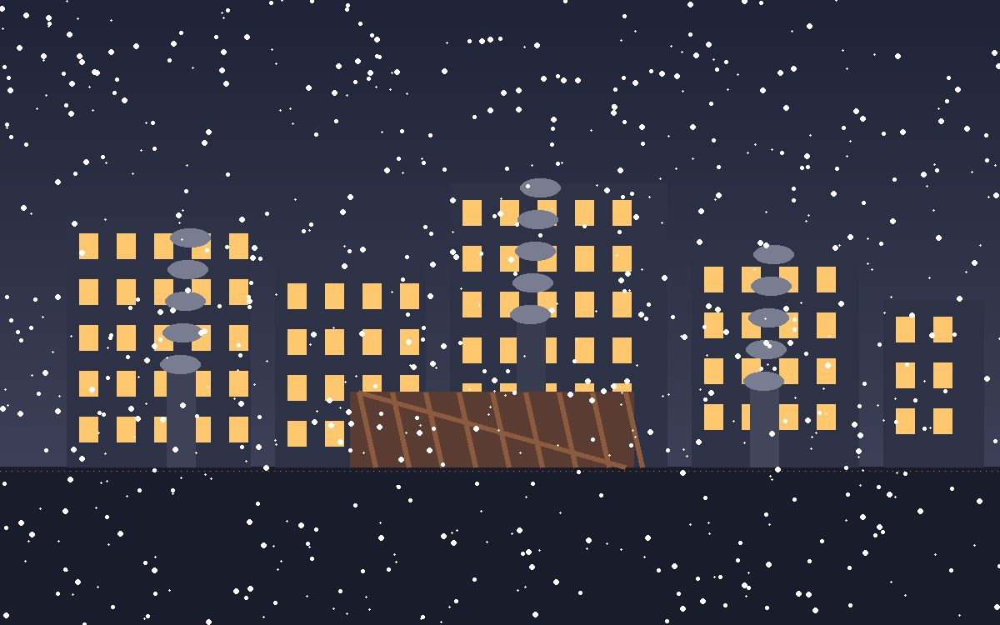
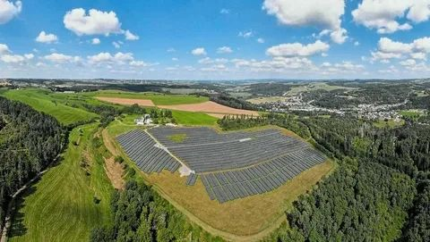
Сельское хозяйство
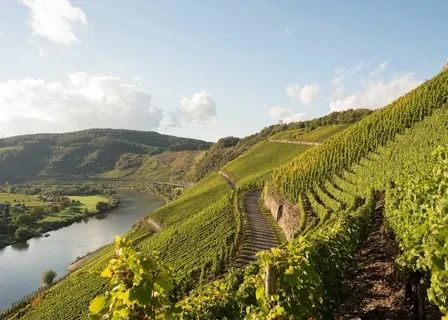
- Доля в экономике ничтожна: менее 1% ВВП и ~1,5% занятых, но хозяйства очень продуктивные и субсидируемые (ОПЕП ЕС).
- Растениеводство: пшеница, ячмень, овёс, кукуруза, сахарная свёкла, картофель; на склонах Мозеля — виноградарство (~130 км знаменитого игристого Crémant и белых вин).
- Животноводство — главная отрасль: молочно-мясное скотоводство, свиноводство, птицеводство; кормовые травы и силос — основа посевов.
- Благоприятность: юг (Гутланд) с мягким климатом и плодородными почвами — да; холодное влажное лето и каменистые почвы севера ограничивают земледелие.
- Продукты самообеспечения: мясо и молоко обеспечиваются почти полностью, вина — наполовину.
- Импорт: фрукты и овощи, кофе, тропические продукты, часть зерна и вина. Экспорт: вина, пиво, молочные продукты, мясные деликатесы.
Население
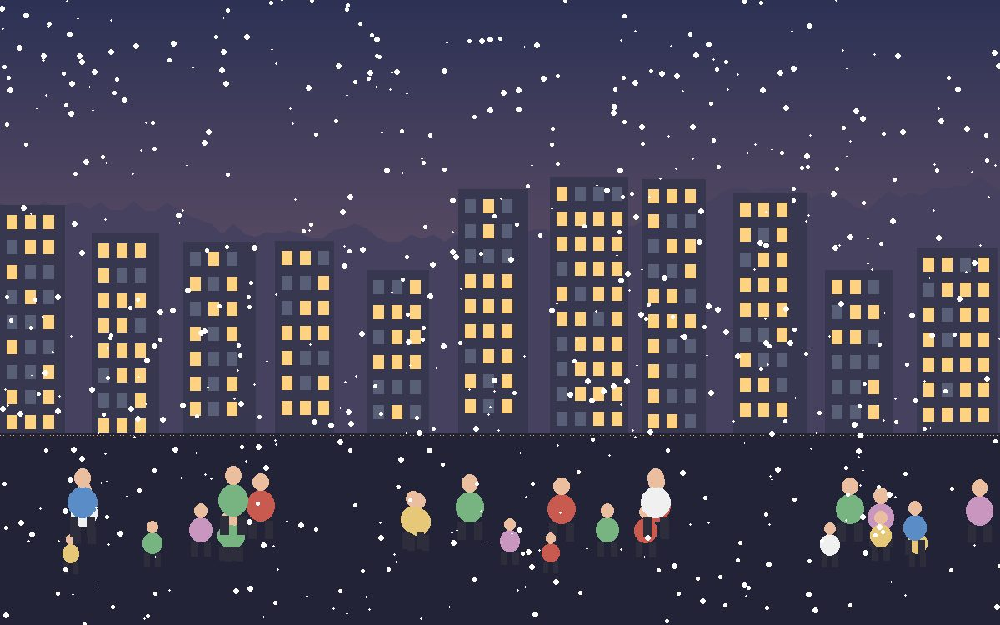
Люксембург — страна, где рост населения почти полностью обеспечивает миграция: каждый второй житель имеет иностранное гражданство, а ежедневно на работу в страну приезжает больше людей, чем уезжает из неё.
Урбанизация ~88%; крупнейшие города — Люксембург (130 тыс.), Эш-сюр-Альзетт, Дифферданж. Плотность ~260 чел./км².
Транспорт
- Особенность: с 2020 года весь общественный транспорт страны бесплатный — первый в истории случай в мире.
- Железные дороги: ~620 км электрифицированных линий CFL; международные поезда TGV/ICE связывают с Парижем (1 ч 55 мин), Брюсселем (30 мин), Кёльном, Франкфуртом.
- Автодороги: густая сеть автомагистралей (A1–A13); транзит между четырьмя крупнейшими мегаполисами Европы создаёт пробки — пик в часы «маятниковой миграции»: ~220 тыс. приграничных работников ежедневно въезжают на работу.
- Водный транспорт: р. Мозель судоходна от порта Мертер (связь с Рейнской водной системой Германии); крупного морского флота нет, экспорт идёт через Роттердам и Антверпен.
- Авиация: аэропорт Люксембург-Финдель — грузовой хаб Cargolux и база Luxair; пассажиропоток ~4–5 млн чел./год.
- Проблемы: перегруженность дорог, зависимость от трансграничных потоков. Перспективы: новая линия трамвая, развитие железнодорожного сообщения, логистика вокруг аэропорта.
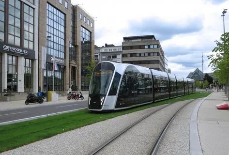
Проблемы и перспективы
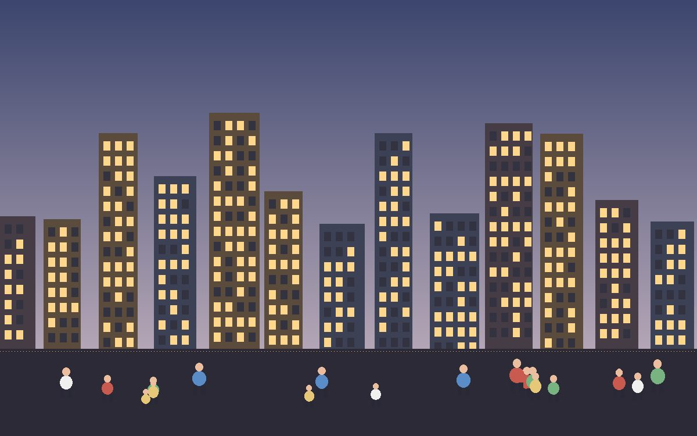
Проблемы
- Перегрев жилищного рынка: цены на жильё выросли в разы, локалам трудно купить дом
- Демографическое старение и нагрузка на пенсионную систему
- Зависимость от мирового финансового сектора — риск при санкциях и кризисах
- Транспортные пробки из-за маятниковой миграции
- Исчерпание собственных ресурсов и энергоимпорт
- Социальная напряжённость: вопросы интеграции почти половины населения-иностранцев
Перспективы
- Диверсификация: космическая отрасль (спутниковый оператор SES, программа добычи ресурсов с астероидов), финтех, искусственный интеллект и суперкомпьютер Meluxina
- «Зелёный курс»: 100% ВИЭ к 2050, водородная энергетика, электромобильность
- Развитие европейского кластера биомедицины и новых материалов
- Расширение трамвайной сети и пригородного железнодорожного сообщения
- Ставка на высококвалифицированных специалистов и англоязычный бизнес
Изюминки страны
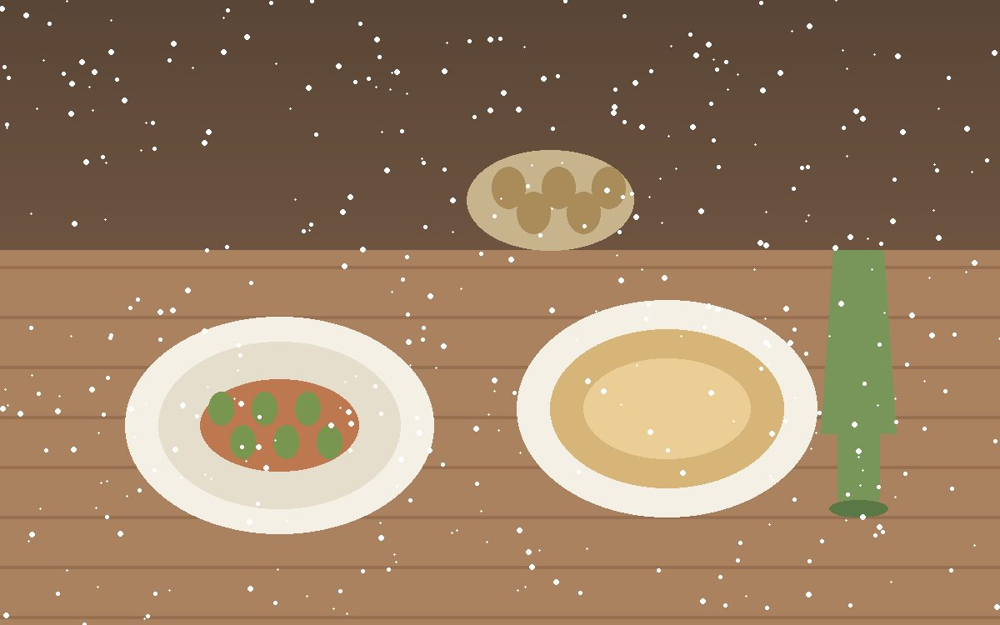
Кухня
Judd mat Gaardebounen — копчёная свиная шея с бобами, национальное блюдо. Bouneschlupp — суп из зелёных стручков. Знамениты мозельские вина и игристый Crémant, пиво Bofferding, шоколад и печенье «Kachkéis»-деликатесы.
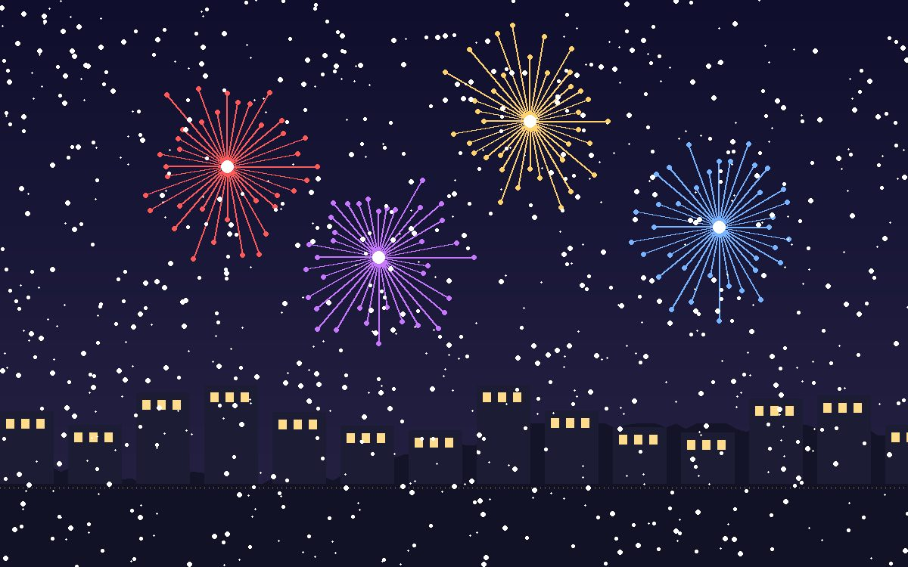
Праздники
Schueberfinken — народная ярмарка в столице (лето). Festival of Fools в Виандене — карнавал дураков. Осенний Vinous — праздник нового вина на Мозеле. Национальный день — 23 июня, канун дня рождения великой герцогини: шествия, концерт и фейерверк на площади Государства.
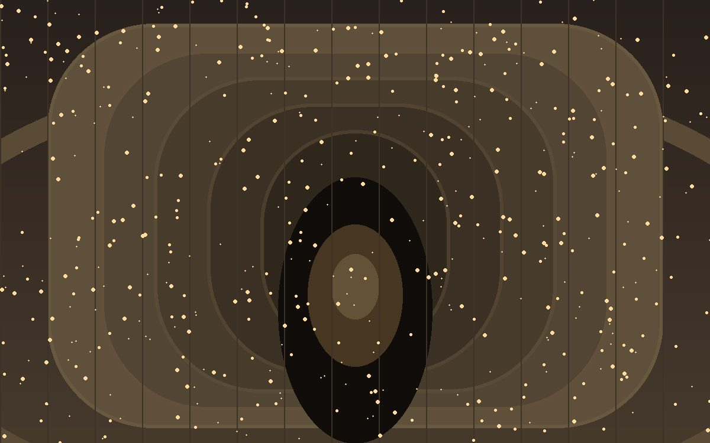
Традиции и чудеса
Казематы Бок — 17 км подземных галерей крепости, ЮНЕСКО. Замок Вианден, где жил Виктор Гюго. Легенда об основании: граф Зигфрид увидел на скале «маленький светлый замок» (Lucilinburhuc) — отсюда и название страны. Страна подарила миру Олимпийских чемпионов и самый большой в ЕС пакет социальных гарантий.